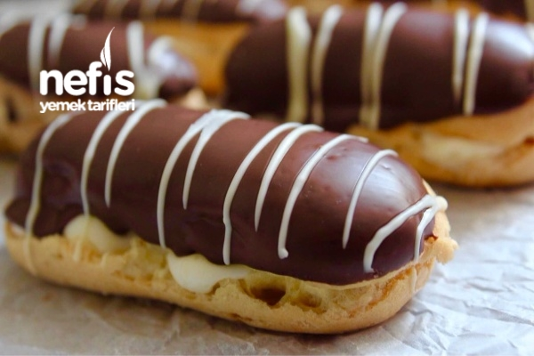

Ekler Tarifi
Malzemeler
Kreması için:
- 800 ml süt
- 1 yumurta sarısı
- 115 gr şeker (1 su bardağından 1 parmak eksik)
- 70 gr un (yarım su bardağından 1 parmak fazla)
- 40 gr nişasta (yarım su bardağından 1 parmak az)
- Yani un ve nişasta toplamda 1 su bardağı olacak
- 2 yemek kaşığı tepeleme tereyağı veya margarin
- 1 paket vanilya
- 1 küçük Türk kahvesi fincanı soğuk süt
- 1 poşet krem şanti
Hamuru için:
- 100 gr tereyağı veya margarin
- 10 gr şeker (bir tatlı kaşığı)
- 1 çimdik tuz
- 200 ml su
- 1 paket vanilya
- 125 gr un (1 su bardağından 1 parmak fazla)
- 4 adet yumurta
Üzeri için:
- 100 gram sütlü çikolata
- 100 gram bitter çikolata
Hazırlanışı
- Kreması için bir tencereye şeker, yumurta sarısı, süt, un ve nişasta eklenir. Koyu bir muhallebi oluncaya kadar karıştırılarak pişirilir.
- Pişen muhallebi sıcakken vanilya ve tereyağı eklenip yağ eriyinceye kadar karıştırılır.
- Üzerine streç film örtülüp buzdolabına kaldırılıp soğumaya bırakılır.
- Daha sonra bir fincan soğuk sütle krem şanti katılaşana kadar iyice çırpılır.
- Tamamen soğumuş olan muhallebi de bir kez mikserle çırpılıp, ardından üzerine çırpılmış şanti eklenir ve ikisi birlikte tekrardan çırpılır. Kreması hazırdır. (Hatta bu krema 1 gün önceden yapılıp buzdolabında bekletilirse, daha kıvamlı ve lezzetli olur)
- Hamuru için tencereye; su, tereyağı, tuz, şeker ve vanilya alınarak kaynatılır. Kaynayan suyun içerisine un boşaltılarak sürekli karıştırılır. Toparlanıp hamur halini aldığında yaklaşık 3-5 dakika daha ocakta karıştırılır ve hamur soğumaya bırakılır.
- Hamur soğuduğunda içerisine tek tek yumurtalar ilave edilir ve mikserle karıştırılır.
- Tamamen karışıp yapışkan bir hamur halini aldığında hamur sıkma torbasına doldurulur.
- Fırın kağıdı serilmiş bir tepsiye ince uzun şeritler sıkılır.
- Önceden ısıtılmış 180 derece (alt-üst) fırın ayarında hamurlar 40-45 dakika pişirilir.
(Bu süre sonunda fırının kapağını açmadan pişen hamurları yaklaşık 25-30 dakika sıcak fırının içerisinde bekletirseniz daha iyi sonuç alınırsınız. Hamurlar tamamen kendini çekmiş olur) - Fırından çıkarılan ve soğumuş olan eklerler ortadan iki eşit parçaya kesilir.
- Alt parçalara bol krema sıkılır ve kapakları benmari usulü eritilmiş çikolataya bulanarak kremanın üzerine kapatılır.
- Bütün eklerlere aynı işlem uygulandıktan sonra arzu edilirse üzerlerine eritilmiş beyaz, sütlü veya bitter çikolata ile dekor verilebilir ya da fındık, fıstık vs. serpilebilir.
Afiyet olsun.